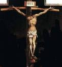

Am Anfang War das Wort

Ein Großartiger Eingang?
Jeden Dezember, beginnen wir, die größte Feier des Jahres zu antizipieren: Weihnachten! Alle Läden sind hell mit Lichtern und Lametta, wir zeichnen Lichter um unsere Häuser und dekorieren einen Baum, und die Straßen vieler Städte leuchten mit funkelnden Lichtern um viele Gebäude. Und die größte Aufregung aller? Geschenke! Was werden wir bekommen? Wird es sein, was wir gehofft haben? Wir können einfach nicht auf den 25. Dezember warten!

Ein Sehr Ruhiger Eingang
So, ist das wie es vor 2000 Jahren passiert ist? Hatten Leute erwartungsvoll gewartet: hatten sie ihre Häuser alle im Vorgriff auf die Geburt von Jesus dekoriert? Hatten sie Geschenke für einander im Vorgriff auf diese lang erwartete Geburt gekauft? Als Er geboren wurde, gab eine Ankündigung auf der ganzen Welt, daß der Heiland endlich gekommen war?
Nicht ganz.

Als Jesus in Bethlehem geboren wurde, auch Stadt Davids genannt (erinneren Sie dich?), nur eine Handvoll Leute waren sich dessen bewusst. Da waren Maria, die Mutter Jesus, und Josef, ihr Verlobter. Die Leute, die den Stall im Gasthaus besaßen, in dem Maria und Josef blieben, wußten wohl, daß die Frau Geburt gegeben hatte, aber es hatte keine besondere Bedeutung für sie.
Aber es herrschte große Freude im Himmel, wir wissen, denn Lukas 2:8-14 sagt uns, daß eine große Gruppe von Engeln erschien einigen Hirten in der Nacht der Geburt Jesus. Sie haben nicht nur angekündigt, dass ein Baby namens Jesus geboren wurde, aber sie verkündeten tatsächlich, daß er der Messias war, auf den das jüdische Volk so lange gewartet hatte!
Aber es würde noch dreißig Jahre sein, bevor irgendjemand anderes damit anfangen würde, das herauszufinden.
Vier M�nner, Vier Geschichten

In den Jahren nach Jesus Tod, Auferstehung und Himmelfahrt, vier verschiedene Männer waren inspiriert, über das Leben Jesus zu schreiben. Die ersten vier Bücher des Neuen Testaments sind nach den Männern benannt, die diese Biographien schrieben (sie sind allgemein Evangelien genannt): Matthäus, Markus, Lukas und Johannes.
Sie diskutierten nicht miteinander; es ist wahrscheinlich, daß sie nicht wussten, jemand anderes schrieb die Geschichte von Jesus. Vielleicht Matthäus, Lukas und Johannes wussten das Evangelium der Markus und sogar gelesen hatten; Gelehrte glauben, daß es das erste Evangelium geschrieben. Aber die vier Evangelien war wurden unabhängig voneinander geschrieben.

Wenn Leute eine Geschichte über eine Veranstaltung erzählen, werden sie in der Regel versuchen, nach ihrer Meinung, was die wichtigsten Teile sind. Dies war bei Matthäus, Markus, Lukas und Johannes der Fall. Einige schließen Ereignisse und Geschichten ein andere nicht; einige sagen Ereignisse in einer etwas anderen Reihenfolge.
Zum Beispiel, nur Matthäus und Lukas erzählen von der Geburt Jesus. Vielleicht, im Kopf von Lukas, war es wichtig für die Menschen zu wissen, daß Jesus von einer Jungfrau Mädchen geboren wurde. Marias Verlobter, Josef, war nicht der Vater von Jesus; Jesus war der Sohn Gottes. (Lukas 1:26-38)
Das Evangelium von Matthäus beginnt mit dem Stammbaum von Jesus. Erinnern Sie sich, in das vor langer Zeit, Gott versprach Abraham, daß die Welt durch einen König gesegnet würde, der von seinen Nachkommen kommen würde (Genesis 12:3)? Matthäus achtet darauf, daß Jesus ein direkter Nachkomme des Königs David war, wer ein direkter Nachkomme des Abraham war. Jesus war die Erfüllung dieser alten Prophezeiung.
Markus und Johannes scheinen für selbstverständlich zu sein daß, wenn sie über Jesus schrieben, jeder würde wissen, über wen sie sprachen: In Seiner Zeit, Jesus war sehr, sehr berühmt. So, Markus und Johannes beginnen ihre Geschichten von Jesus an dem Punkt, an dem Er Seinen irdischen Dienst begann, daß ist, als Jesus ungefähr dreißig Jahre alt war.
Ein Überraschender Messias

Als wir von den Propheten erfuhren, die voraussagten, daß Israel nach Assyrien und Babylon fällt würde, wir haben auch gelernt, daß diese Propheten vorhersagten, daß ein König, ein Messias, ein Retter, aus König Davids Linie würde kommen. Diese Prophezeiungen gaben den Juden Hoffnung, daß Israel wieder eine große Nation werden würde, daß ein König würde kommen, um alle Feinde Israels zu erobern, und sie zu einer Supermacht zu machen, die über die Welt herrschen würde.
Aber die Juden lasen nicht ALLE Prophezeiungen; oder, ob sie waren, sie verstanden nicht einige von ihnen. Die Propheten gaben zwei Beschreibungen des Messias, den Gott senden würde. Eins war, tatsächlich, ein mächtiger Herrscher zu sein. Was die Juden nicht verstanden haben, war daß dieser König würde von einem höchst unauffälligen Ort kommen und daß Er würde nicht mit großer Fanfare kommen (erinneren Sie an die ruhige Nacht im dunklen, kleinen Bethlehem?). Dieser neue König wäre ein Mann, der Sorge, Trauer und Schmerz kennen würde, nicht königliche Herrlichkeit und Macht.
Als ein besiegtes, demoralisiertes Volk, die Juden waren nicht auf der Suche nach einem Messias wie die demütige Person Jesus war; sie waren auf der Suche nach jemandem viel spektakulärer als daß.
Und so es war daß, als Jesus kam und unter ihnen lebte, sie erkannten den Messias nicht, als sie Ihn sahen.

Die Lehre von Jesus
Denken Sie daran, daß Jesus aufgewachsen ist an einem Ort, der unter der Herrschaft eines anderen Landes war: zu diesem Zeitpunkt, es war das mächtige Römische Reich. Jesus wuchs in einer sehr einfachen Gesellschaft auf; das jüdische Volk war sehr fromm religiös, und Seine Nachbarn waren Bauern oder Fischer oder Handwerker (Josef, der Mann seiner Mutter, war ein Schreiner).
Vielleicht, weil dieser, Jesus versuchte, geistige Wahrheiten zu lehren, indem er Geschichten erzählte, so Parabeln genannt, daß oft Dinge, die Menschen in seiner Gesellschaft hätte vertraut und verstanden:

- ein Bauer, der Samen in seinem Feld sät (Matthäus 13:2-23)
- ein Sohn, der sich gegen seine Eltern auflehnt, aber mit großer Sorge um seine Sünden zu ihnen zurückkehrt (Lukas 15:11-32)
- ein Hirte, der eines seiner Schafe verliert (Matthäus 18:10-14)

Die Pharisäer
In Jesus Tag, die Priester (die Bibel nennt sie auch Pharisäer - einWort, daß "die getrennt sind" bedeutet,) beherrschten das tägliche Leben der Juden. Die Priester kamen aus einem der zwölf Stämme Israels daß Gott hatte speziell für diese Rolle ausgewählt: die Leviten (aus dem Stamm Levi). Sie hielten es für ihre Aufgabe, das jüdische Volk vor dem Verwechseln zu bewahren, wie sie in der Vergangenheit hatten. Es war ihre Aufgabe, so sie dachten, zu lesen und zu interpretieren die Bibel für das Volk. (Denken Sie daran, was wir früher gesagt haben wie Gott beabsichtigt die Bibel für alle?)
Jesus war nicht aus dem Stamm Levi, also war Jesus kein Priester.

Für ein Rabbiner (ein Lehrer der biblischen Wahrheiten und Erkenntnis) zu sein, musste ein Mann eine lange Ausbildung in einer speziellen rabbinischen Schule durchmachen.
Jesus ist nicht zur rabbinischen Schule gegangen, und so hielten die Pharisäer Ihn nicht "qualifiziert," ein Lehrer zu sein.
Foglich, fast vom Anfang Seines Dienstes, war Jesus im Widerspruch zu den jüdischen religiösen Herrschern.
Immer noch, Massen von Menschen versammelten sich um zu hören, was Jesus lehrte. In einer Seiner berühmtesten Lehre, genannt Die Bergpredigt
(es findet sich sowohl in Matthäus 5 und auch in Lukas 6), praktisch jeden Punkt, den Er machte, dem entgegen, was die Pharisäer den Menschen glauben lassen würden.
Einige der wichtigsten Ideen, die Jesus Seine Anhänger lernen wollte waren:
- Gott liebt Menschen und will, daß sie Ihn im Gegenzug lieben. Einer der Wege, unsere Liebe für Gott zu zeigen ist, gehorcht nicht nur dem Buchstaben des Gesetzes sondern auch dem Geist. So, als auch ehrlich zu sein, Jesus sagte seinen Anhängern, barmherzig, freundlich und gerecht zu sein.
- Jesus möchte, daß seine Anhänger durch ihre Liebe erkannt werden: Liebe für ihre Mitgläubigen, Liebe sogar für ihre Feinde. Gott hat uns angeboten, uns für unsere Sünden zu vergeben; Er will, daß wir uns gegenseitig vergeben.
Die wichtigste Sache Jesus wollte seine Anhänger wissen lassen war daß Er, Jesus, war der Sohn Gottes, und daß das Heil der Sünde kommt nur durch Ihn. Einer der berühmtesten Verse in der Bibel erklärt der neue Bund, den Gott mit der Menschheit machte, Johannes 3:16:
Denn so sehr hat Gott die Welt geliebt, daß er seinen einziggezeugten Sohn gab, damit jeder, der Glauben an ihn ausübt, nicht vernichtet werde, sondern ewiges Leben habe.
Diese Erklärung Jesus war aus zwei Gründen revolutionär: als erstes, die Idee, daß Jesus der Sohn Gottes war, war für viele Juden nicht akzeptabel. Wie konnte ein bloßer Mensch Gott sein? Die zweite Idee die religiöse Führer nicht akzeptieren konnten, war daß das Heil nicht mehr nur den Juden vorbehalten war. Jesu sagte, daß JEMAND, der an Ihn glaubt, zum Reich Gottes gehören kann (Johannes 1:12).
Die Sadduzäer
Die Sadduzäer, eine prominente, oft reiche Gruppe von Juden die in Jesus Zeit lebten, hatten eine Art politische Anordnung mit den Römern, damit Sie eine gewisse politische Macht genossen. Die Sadduzäer haben manchmal die Aufgabe übernommen, römische Steuern von ihren Juden zu sammeln, und waren oft unehrlich, forderten die Menschen mehr zu zahlen, als tatsächlich geschuldet wurde, so sie konnten einen Anteil für sich selbst behalten. Die Sadduzäer wurden von vielen Juden als Verräter betrachtet wegen ihrer engen Bindung an die verhaßten Römer.
Oft wurde von Rebellion unter den Juden gesprochen; sie riefen unter der Hörte der römischen Herrschaft. Die Sadduzäer hielten es für ihre Aufgabe, den Frieden zwischen den Juden und den Römern zu bewahren. Je weniger Ärger die Juden den Römern machten, so dachten die Sadduzäer, desto einfacher wäre es für alle.

Das Problem Mit Jesus
Wie wir schon früher gesehen haben, Jesus ging über lehren die Massen von Menschen und verbreitete die gute Nachricht an alle über Gott und seine Liebe. Die Pharisäer mochten das überhaupt nicht; sie wollten die einzige religiöse Autorität unter den Juden sein. Jesus lehrte die Menschen, tiefer über geistige Dinge nachzudenken, als es die Priester je getan hatten, und sie liebten Ihn dafür.

Die Sadduzäer mochten die Massen nicht, die Jesus anzog, entweder. Eine Menschenmenge konnte nicht leicht kontrolliert werden. Wenn Jesus die Menschen um Ihn wünschte, Ihn in einer Rebellion gegen Rom zu folgen, was würden sie tun, um es zu verhindern?
Die Sadduzäer wußten, daß selbst eine große Menge von Juden kein Spiel für die Macht der römischen Armee war. Wenn die Römer eine jüdische Rebellion ablegen mussten, sie würden sie völlig zermalmen (und um 35 years nach das Leben Jesus, das ist genau das, was sie taten). Ihre politische Macht würde mit den Römern nichts mehr bedeuten, und die Sadduzäer waren nicht dabei, ihre Macht zu einem rabbelfürmigen niemand wie Jesus zu verlieren!

Weitaus, das Schlimmste, was Jesus tat, obwohl, war den Menschen zu verkünden, daß Er tatsächlich der Sohn Gottes war. Jesus erzählte es ihnen, daß Er der Messias war, auf den sie so lange gewartet hatten. Für die Pharisäer, das war Gotteslösterung (die größte Respektlosigkeit für Gott)! Nach jüdischem Recht, war es ein Verbrechen mit Todesstrafe.
Immer wieder, hatte Jesus Zeichen und Wunder vollbracht um Seinen Anspruch zu behaupten, der Messias zu sein: Er heilte die Kranken, machte blinde Leute sehen, und machte lahme Menschen wieder gehen. Er hatte sogar einen Mann von den Toten auferweckt!
Jesus wurde als Bedrohung empfunden zugleich zu den Pharisäer (weil Er die Menschen veranlasste, ihre Autorität zu bezweifeln) und zu den Sadduzäer (weil Er eine Bedrohung für ihre Macht sein konnte).
Die Pharisäer und die Sadduzäer waren nicht normalerweise freundlich oder kooperativ mit einander, aber jetzt hatten sie einen gemeinsamen Feind: Jesus.

Eines abends, als Jesus betete, Judas Iskariot, ein Mann, der in den engsten Freunden Jesus gewesen war (Seine zwölf Jünger), führte er eine Gruppe von Pharisäern und Sadduzäern, wo er wusste, Jesus liebte zu beten, der Garten von Gethsemane. Jesus widerstand nicht, verhaftet zu werden, obwohl Er wusste, daß Er kein Verbrechen begangen hatte.
Jesus Ankläger nahmen ihn nach Kajaphas, der Hohepriester des Tempels, ein geheimer Prozess durchführen. Sie sagten Kajaphas, daß Jesus der Blasphemie schuldig sei, wegen seines Anspruchs, der Messias zu sein.

Als er vor dem Hohenpriester stand, Jesus sagte, Ich bin der Messias, und du wirst sehen, wie ich zur Rechten Gottes sitze.
(Markus 14:62)
Obwohl falsche Zeugen gesammelt worden waren, um "Beweise" gegen Jesus zu geben, Kajaphas entschied, daß die Erklärung Jesus allein ein Schuldbekenntnis sei. Sein Urteil war, dass Jesus getötet werden sollte.
Die Juden konnten ohne Erlaubnis des römischen Statthalters keine Todesstrafe durchführen, Pilatus. Die Priester brachten Jesus vor Pilatus und sagten ihm, daß Jesus Verrat begangen hatte: Wenn er behauptete, der Messias zu sein, sagten sie, das war dasselbe, als Er sagte, Er sei der König der Juden. Nach römischem Recht, niemand konnte sich einen König außer Caesar nennen.
Pilatus glaubte nicht wirklich, daß Jesus einen ernsten Anspruch auf König machte, da Er nicht einmal eine Verteidigung für sich selbst zur Verfügung stellte, während Er versucht wurde. Aber die jüdischen Priester bestanden darauf, Jesus zu töten. Selbst als Pilatus ihnen die Wahl ließ, einen verurteilten Mörder, Barabbas, zu befreien, oder Jesus zu befreien, schrien die Leute alle, daß Jesus getötet werden sollte. (Markus 15:6-13)
Jesus Stirbt und Ist Auferstanden
Kreuzigung war eine Form als Todesstrafe von den Römern verwendet. Es war eine schändlichste Art zu sterben. Obwohl Jesus gewöhnlich in Gemälden als Tragen eines Lendenstoffes dargestellt wird, Er war tatsächlich von seiner Kleidung entkleidet, so daß Er war nackt für alle zu sehen. Es war besonders schamvoll weil die Kreuzigung von den Römern für die schlimmsten Arten von Kriminellen reserviert wurde.
Nach einer geschlagenen Nacht, zuerst von seinen jüdischen Ankläger und dann von den römischen Wachen, Jesus wurde gezwungen, zu dem Ort, wo Er gekreuzigt werden sollte, Sein eigenes Kreuz zu tragen. Er war so schwach von all Seinen Schlagen, daß Er nicht konnte unter dem Gewicht des Kreuzes ertragen; ein Sklave, den sie auf dem Weg passierten, wurde dazu gezwungen, Jesus Kreuz für Ihn zu tragen.
Als sie an der Stelle der Kreuzigung ankamen, nagelten die römischen Wächter Jesus Hände ans Kreuz. Die Soldaten, die Ihn dort brachten, spielten für die Kleidung, die sie Ihm genommen hatten.
Obwohl es in der Regel mehrere Tage intensives Leiden dauerte, um an einem Kreuz zu sterben, Jesus Wunden und Blutverlust aus der Nacht haben wahrscheinlich Seinen Tod beeilt. Er starb am selben Tag daß Er ans Kreuz genagelt wurde.

Während die meisten Freunde Jesus Ihn verlassen hatten, als er im Garten von Gethsemane verhaftet wurde, es gab einen Mann namens Josef von Arimathea, der den Mut hatte, zu Pilatus zu gehen, um Jesus Körper zu bitten, so daß es richtig begraben werden konnte.
Er wickelte Jesus Körper in Leinen und legte es in ein Grab, das aus Fels gehauen worden war. Dann rollte er einen großen Stein über den Eingang und ging seinen Weg.
Jesus hatte mehrmals versucht, Seinen Jüngern zu sagen, daß Er als letztes Opfer für die Sünden der Menschheit sterben müsste, aber sie hatten Ihn nie verstanden. Wenn Jesus der Sohn Gottes war, sie begründeten, wenn Er der Messias war, der von Gott versprochen wurde, wie könnte Er jemals sterben?
Am dritten Tag nach Jesus starb, einige der Frauen, die Seine Freunde waren, gingen zum Grab, wo Er begraben wurde. Es war die jüdische Gewohnheit, einen Körper mit bestimmten Gewürzen zum Begräbnis zu salben. Als sie gingen, fragten sie sich, wie sie den Stein, der vor dem Grabe gerollt war, jemals bewegen würden.
Als die Frauen eintrafen, waren sie erstaunt, daß der Stein bereits weggerollt war, und daß das Grab leer war!
Ein Engel, der auf dem Boden saß, wo Jesus Körper war, sagte zu ihnen, Habt keine Angst! Jesus ist von den Toten auferstanden, wie Er es sagte!
Der Engel sagte den Frauen, zu ihren Freunden zurückzukehren und ihnen die große Nachricht zu erzählen, daß Jesus von den Toten auferstanden sei. (Markus 16:6-7)
So wie die Juden jedes Jahr Pessach feiern um ihre Freilassung aus der Sklaverei in Ägypten zu denken, Christen feiern Ostersonntag als das glorreichste Ereignis in der Geschichte: Jesus war von den Toten auferstanden, die Macht des Todes über die Menschheit erobert, und die Sünden für alle Zeit vergeben hat!
Natürlich, Jesus Freunde konnten es nicht glauben, als sie hörten, daß Jesus nicht in seinem Grab war.
Aber Jesus erschien nach seiner Auferstehung mehrmals den elf verbleibenden Jüngern. Er verbrachte viel Zeit damit, mit ihnen darüber zu sprechen, wie Er die Erfüllung von so vielen Prophezeiungen gewesen war, und ihre Augen waren endlich offen für alle Wahrheiten, die Jesus versucht hatte, sie vor seiner Kreuzigung zu erzählen. (Lukas 24:27)

Jesus Steigt in den Himmel
Jesus fuhr fort, den Jüngern über einen Zeitraum von vierzig Tagen nach Seiner Auferstehung zu erscheinen. Einmal, während einer Mahlzeit teilte Er ihnen mit, Jerusalem nicht zu verlassen, bis sie die Gabe des Heiligen Geistes empfangen hatten, die ihnen verheißen worden war. (Johannes 14:16)
Bei der letzten Gelegenheit, als Jesus ihnen erschien, die Jünger fragten Ihn, ob Er nun Israel zu seiner früheren Herrlichkeit wiederherstellen werde. Jesus antwortete, daß nur Gott der Vater die Antwort auf diese Frage wissen muß. (Apostelgeschichte 1:7)
Und, wie sie alle mit Ihm standen, Jesus begann aufzusteigen, hoch und weg von ihnen. Die Jünger schauten und schauten, bis sie Jesus nicht mehr sehen konnten. Jesus war in den Himmel aufgestiegen, um bei Seinem Vater zu sein, aber die Geschichte dahin hörte nicht auf. Tatsächlich war es erst der Anfang!